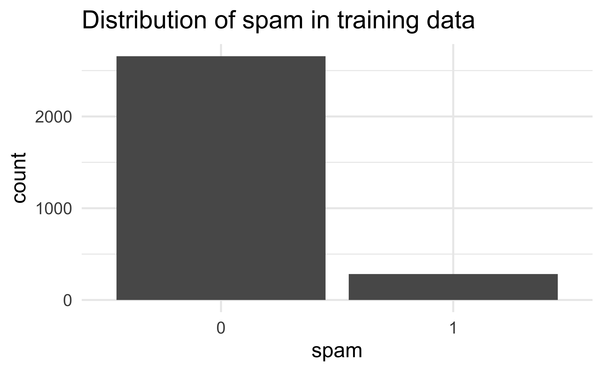
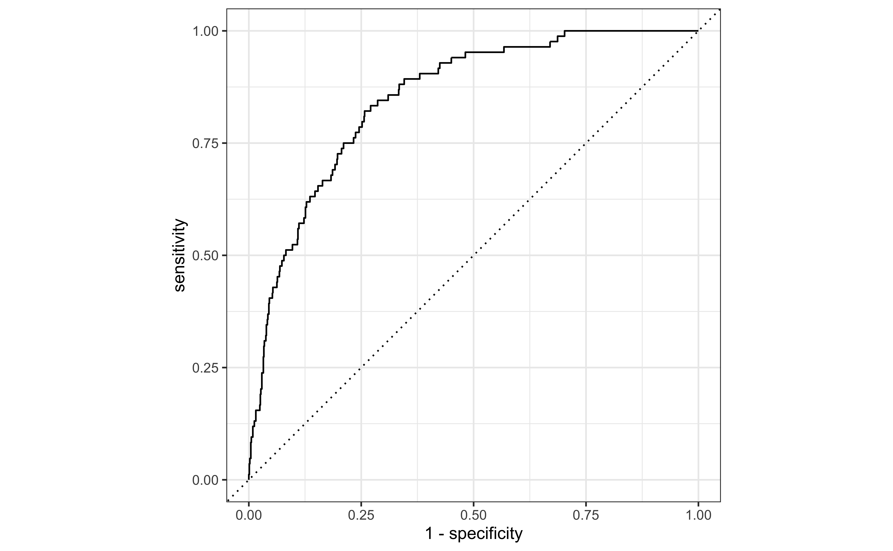
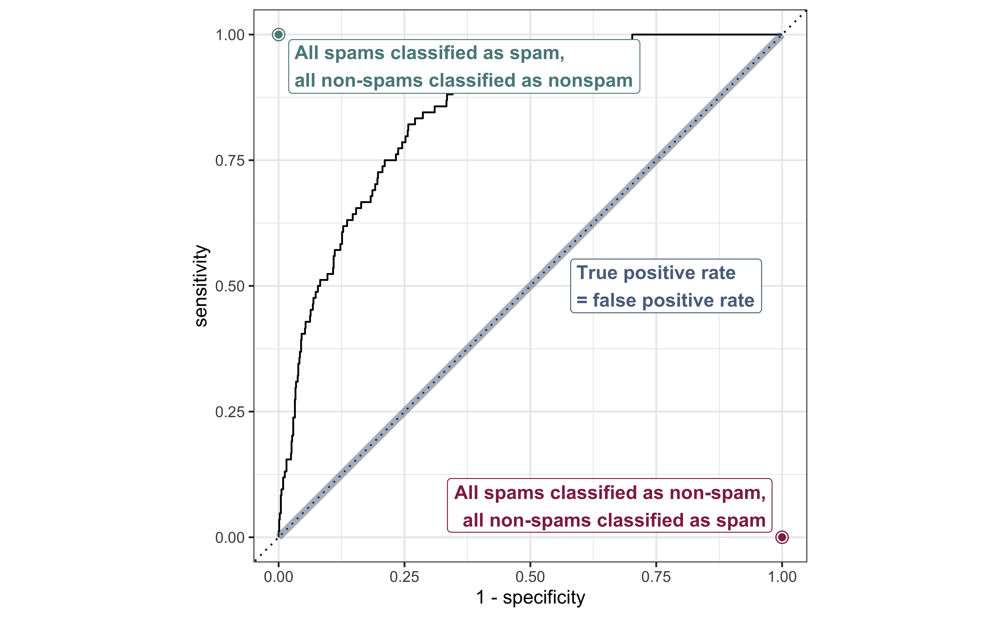
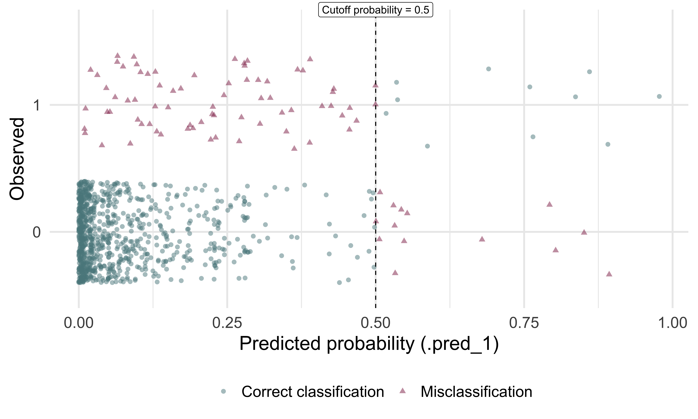
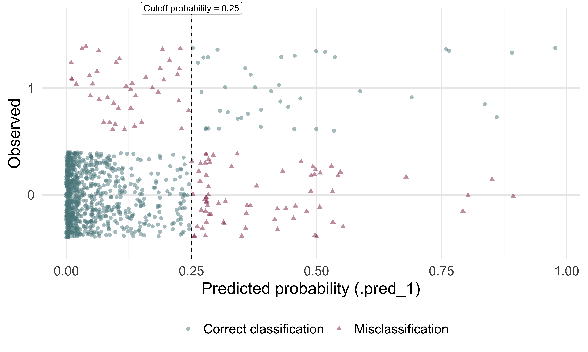
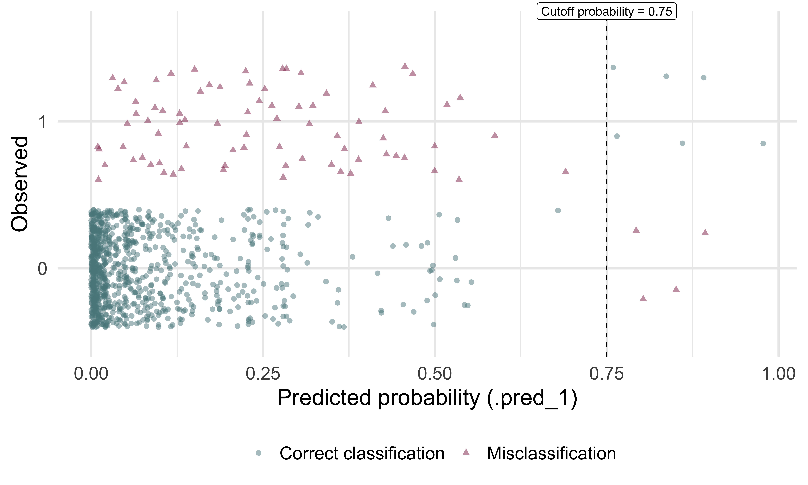

# load packages
library(tidyverse)
library(tidymodels)
library(openintro)
library(knitr)
# set default theme and larger font size for ggplot2
ggplot2::theme_set(ggplot2::theme_minimal(base_size = 20))LR: Prediction / classification
STA 210 - Spring 2022
Welcome
Topics
- Bulding predictive logistic regression models
- Sensitivity and specificity
- Making classification decisions
Computational setup
Data
openintro::email
These data represent incoming emails for the first three months of 2012 for an email account.
- Outcome:
spam- Indicator for whether the email was spam. - Predictors:
spam, `to_multiple,from,cc,sent_email,time,image,attach,dollar,winner,inherit,viagra,password,num_char,line_breaks,format,re_subj,exclaim_subj,urgent_subj,exclaim_mess,number.
See here for more detailed information on the variables.
Training and testing split
# Fix random numbers by setting the seed
# Enables analysis to be reproducible when random numbers are used
set.seed(1116)
# Put 75% of the data into the training set
email_split <- initial_split(email)
# Create data frames for the two sets
email_train <- training(email_split)
email_test <- testing(email_split)Exploratory analysis
The sample is unbalanced with respect to spam.

Reminder: Modeling workflow
Create a recipe for feature engineering steps to be applied to the training data
Fit the model to the training data after these steps have been applied
Using the model estimates from the training data, predict outcomes for the test data
Evaluate the performance of the model on the test data
Start with a recipe
Initiate a recipe
email_rec <- recipe(
spam ~ ., # formula
data = email_train # data to use for cataloging names and types of variables
)
summary(email_rec)# A tibble: 21 × 4
variable type role source
<chr> <chr> <chr> <chr>
1 to_multiple nominal predictor original
2 from nominal predictor original
3 cc numeric predictor original
4 sent_email nominal predictor original
5 time date predictor original
6 image numeric predictor original
7 attach numeric predictor original
8 dollar numeric predictor original
9 winner nominal predictor original
10 inherit numeric predictor original
11 viagra numeric predictor original
12 password numeric predictor original
13 num_char numeric predictor original
14 line_breaks numeric predictor original
15 format nominal predictor original
16 re_subj nominal predictor original
17 exclaim_subj numeric predictor original
18 urgent_subj nominal predictor original
19 exclaim_mess numeric predictor original
20 number nominal predictor original
21 spam nominal outcome originalRemove certain variables
email_rec <- email_rec %>%
step_rm(from, sent_email)Recipe
Inputs:
role #variables
outcome 1
predictor 20
Operations:
Delete terms from, sent_emailFeature engineer date
email_rec <- email_rec %>%
step_date(time, features = c("dow", "month")) %>%
step_rm(time)Recipe
Inputs:
role #variables
outcome 1
predictor 20
Operations:
Delete terms from, sent_email
Date features from time
Delete terms timeDiscretize numeric variables
email_rec <- email_rec %>%
step_cut(cc, attach, dollar, breaks = c(0, 1))Recipe
Inputs:
role #variables
outcome 1
predictor 20
Operations:
Delete terms from, sent_email
Date features from time
Delete terms time
Cut numeric for cc, attach, dollarCreate dummy variables
email_rec <- email_rec %>%
step_dummy(all_nominal(), -all_outcomes())Recipe
Inputs:
role #variables
outcome 1
predictor 20
Operations:
Delete terms from, sent_email
Date features from time
Delete terms time
Cut numeric for cc, attach, dollar
Dummy variables from all_nominal(), -all_outcomes()Remove zero variance variables
Variables that contain only a single value
email_rec <- email_rec %>%
step_zv(all_predictors())Recipe
Inputs:
role #variables
outcome 1
predictor 20
Operations:
Delete terms from, sent_email
Date features from time
Delete terms time
Cut numeric for cc, attach, dollar
Dummy variables from all_nominal(), -all_outcomes()
Zero variance filter on all_predictors()All in one place
email_rec <- recipe(spam ~ ., data = email_train) %>%
step_rm(from, sent_email) %>%
step_date(time, features = c("dow", "month")) %>%
step_rm(time) %>%
step_cut(cc, attach, dollar, breaks = c(0, 1)) %>%
step_dummy(all_nominal_predictors()) %>%
step_zv(all_predictors())Build a workflow
Define model
email_spec <- logistic_reg() %>%
set_engine("glm")
email_specLogistic Regression Model Specification (classification)
Computational engine: glm Define workflow
Remember: Workflows bring together models and recipes so that they can be easily applied to both the training and test data.
email_wflow <- workflow() %>%
add_model(email_spec) %>%
add_recipe(email_rec)══ Workflow ════════════════════════════════════════════════════════════════════
Preprocessor: Recipe
Model: logistic_reg()
── Preprocessor ────────────────────────────────────────────────────────────────
6 Recipe Steps
• step_rm()
• step_date()
• step_rm()
• step_cut()
• step_dummy()
• step_zv()
── Model ───────────────────────────────────────────────────────────────────────
Logistic Regression Model Specification (classification)
Computational engine: glm Fit model to training data
email_fit <- email_wflow %>%
fit(data = email_train)
tidy(email_fit) %>% print(n = 31)# A tibble: 27 × 5
term estimate std.error statistic p.value
<chr> <dbl> <dbl> <dbl> <dbl>
1 (Intercept) -0.867 0.259 -3.34 8.32e- 4
2 image -1.72 0.941 -1.83 6.78e- 2
3 inherit 0.359 0.179 2.01 4.48e- 2
4 viagra 1.90 40.6 0.0469 9.63e- 1
5 password -0.951 0.405 -2.35 1.88e- 2
6 num_char 0.0475 0.0246 1.93 5.35e- 2
7 line_breaks -0.00499 0.00140 -3.55 3.78e- 4
8 exclaim_subj -0.196 0.287 -0.682 4.95e- 1
9 exclaim_mess 0.00845 0.00188 4.49 6.99e- 6
10 to_multiple_X1 -2.65 0.370 -7.17 7.78e-13
11 cc_X.1.68. -0.350 0.518 -0.676 4.99e- 1
12 attach_X.1.21. 2.17 0.399 5.44 5.19e- 8
13 dollar_X.1.64. 0.122 0.230 0.529 5.97e- 1
14 winner_yes 2.25 0.438 5.14 2.79e- 7
15 format_X1 -0.945 0.165 -5.71 1.10e- 8
16 re_subj_X1 -2.96 0.463 -6.39 1.61e-10
17 urgent_subj_X1 4.77 1.26 3.79 1.51e- 4
18 number_small -0.928 0.173 -5.36 8.48e- 8
19 number_big -0.190 0.256 -0.740 4.59e- 1
20 time_dow_Mon 0.116 0.307 0.379 7.05e- 1
21 time_dow_Tue 0.394 0.279 1.41 1.58e- 1
22 time_dow_Wed -0.175 0.285 -0.613 5.40e- 1
23 time_dow_Thu 0.134 0.288 0.467 6.41e- 1
24 time_dow_Fri 0.101 0.288 0.352 7.25e- 1
25 time_dow_Sat 0.308 0.310 0.995 3.20e- 1
26 time_month_Feb 0.767 0.187 4.11 3.99e- 5
27 time_month_Mar 0.524 0.186 2.82 4.81e- 3Make predictions
Make predictions for test data
email_pred <- predict(email_fit, email_test, type = "prob") %>%
bind_cols(email_test)
email_pred# A tibble: 981 × 23
.pred_0 .pred_1 spam to_multiple from cc sent_email time
<dbl> <dbl> <fct> <fct> <fct> <int> <fct> <dttm>
1 0.962 0.0376 0 0 1 0 0 2012-01-01 02:03:59
2 0.995 0.00461 0 1 1 0 1 2012-01-01 12:55:06
3 0.999 0.00127 0 0 1 1 1 2012-01-01 14:38:32
4 0.997 0.00281 0 0 1 2 0 2012-01-01 18:32:53
5 0.987 0.0128 0 0 1 0 0 2012-01-02 00:42:16
6 0.999 0.000886 0 0 1 1 0 2012-01-02 10:12:51
7 0.994 0.00633 0 0 1 4 0 2012-01-02 11:45:36
8 0.851 0.149 0 0 1 0 0 2012-01-02 16:55:03
9 0.968 0.0318 0 0 1 0 0 2012-01-02 20:07:17
10 0.997 0.00277 0 0 1 0 1 2012-01-02 23:34:50
# … with 971 more rows, and 15 more variables: image <dbl>, attach <dbl>,
# dollar <dbl>, winner <fct>, inherit <dbl>, viagra <dbl>, password <dbl>,
# num_char <dbl>, line_breaks <int>, format <fct>, re_subj <fct>,
# exclaim_subj <dbl>, urgent_subj <fct>, exclaim_mess <dbl>, number <fct>A closer look at predictions
Which of the following 10 emails will be misclassified?
email_pred %>%
arrange(desc(.pred_1)) %>%
select(contains("pred"), spam)# A tibble: 981 × 3
.pred_0 .pred_1 spam
<dbl> <dbl> <fct>
1 0.0223 0.978 1
2 0.107 0.893 0
3 0.109 0.891 1
4 0.140 0.860 1
5 0.149 0.851 0
6 0.163 0.837 1
7 0.197 0.803 0
8 0.207 0.793 0
9 0.235 0.765 1
10 0.240 0.760 1
# … with 971 more rowsSensitivity and specificity
False positive and negative
| Email is spam | Email is not spam | |
|---|---|---|
| Email classified as spam | True positive | False positive (Type 1 error) |
| Email classified as not spam | False negative (Type 2 error) | True negative |
False negative rate = P(classified as not spam | Email spam) = FN / (TP + FN)
False positive rate = P(classified as spam | Email not spam) = FP / (FP + TN)
Sensitivity and specificity
| Email is spam | Email is not spam | |
|---|---|---|
| Email classified as spam | True positive | False positive (Type 1 error) |
| Email classified as not spam | False negative (Type 2 error) | True negative |
- Sensitivity = P(classified as spam | Email spam) = TP / (TP + FN)
- Sensitivity = 1 − False negative rate
- Specificity = P(classified as not spam | Email not spam) = TN / (FP + TN)
- Specificity = 1 − False positive rate
. . .
If you were designing a spam filter, would you want sensitivity and specificity to be high or low? What are the trade-offs associated with each decision?
Evaluate the performance
Receiver operating characteristic (ROC) curve+ which plot true positive rate vs. false positive rate (1 - specificity).
+ Originally developed for operators of military radar receivers, hence the name.
email_pred %>%
roc_curve(
truth = spam,
.pred_1,
event_level = "second"
) %>%
autoplot()
ROC curve, under the hood
email_pred %>%
roc_curve(
truth = spam,
.pred_1,
event_level = "second"
)# A tibble: 981 × 3
.threshold specificity sensitivity
<dbl> <dbl> <dbl>
1 -Inf 0 1
2 1.31e-13 0 1
3 2.63e- 8 0.00111 1
4 5.75e- 6 0.00223 1
5 1.36e- 5 0.00334 1
6 2.33e- 5 0.00446 1
7 2.74e- 5 0.00557 1
8 3.28e- 5 0.00669 1
9 4.59e- 5 0.00780 1
10 4.78e- 5 0.00892 1
# … with 971 more rowsROC curve

Evaluate the performance
email_pred %>%
roc_auc(
truth = spam,
.pred_1,
event_level = "second"
)# A tibble: 1 × 3
.metric .estimator .estimate
<chr> <chr> <dbl>
1 roc_auc binary 0.850Make decisions
Cutoff probability: 0.5
Suppose we decide to label an email as spam if the model predicts the probability of spam to be more than 0.5.
| Email is not spam | Email is spam | |
|---|---|---|
| Email classified as not spam | 883 | 73 |
| Email classified as spam | 14 | 11 |
cutoff_prob <- 0.5
email_pred %>%
mutate(
spam_pred = as_factor(if_else(.pred_1 >= cutoff_prob, 1, 0)),
spam = if_else(spam == 1, "Email is spam", "Email is not spam"),
spam_pred = if_else(spam_pred == 1, "Email classified as spam", "Email classified as not spam")
) %>%
count(spam_pred, spam) %>%
pivot_wider(names_from = spam, values_from = n) %>%
kable(col.names = c("", "Email is not spam", "Email is spam"))Confusion matrix
Cross-tabulation of observed and predicted classes:
email_pred %>%
mutate(spam_predicted = as_factor(if_else(.pred_1 >= cutoff_prob, 1, 0))) %>%
conf_mat(truth = spam, estimate = spam_predicted) Truth
Prediction 0 1
0 883 73
1 14 11Classification

Cutoff probability: 0.25
Suppose we decide to label an email as spam if the model predicts the probability of spam to be more than 0.25.
| Email is not spam | Email is spam | |
|---|---|---|
| Email classified as not spam | 826 | 42 |
| Email classified as spam | 71 | 42 |
cutoff_prob <- 0.25
email_pred %>%
mutate(
spam_pred = as_factor(if_else(.pred_1 >= cutoff_prob, 1, 0)),
spam = if_else(spam == 1, "Email is spam", "Email is not spam"),
spam_pred = if_else(spam_pred == 1, "Email classified as spam", "Email classified as not spam")
) %>%
count(spam_pred, spam) %>%
pivot_wider(names_from = spam, values_from = n) %>%
kable(col.names = c("", "Email is not spam", "Email is spam"))Classification

Cutoff probability: 0.75
Suppose we decide to label an email as spam if the model predicts the probability of spam to be more than 0.75.
| Email is not spam | Email is spam | |
|---|---|---|
| Email classified as not spam | 893 | 78 |
| Email classified as spam | 4 | 6 |
cutoff_prob <- 0.75
email_pred %>%
mutate(
spam_pred = as_factor(if_else(.pred_1 >= cutoff_prob, 1, 0)),
spam = if_else(spam == 1, "Email is spam", "Email is not spam"),
spam_pred = if_else(spam_pred == 1, "Email classified as spam", "Email classified as not spam")
) %>%
count(spam_pred, spam) %>%
pivot_wider(names_from = spam, values_from = n) %>%
kable(col.names = c("", "Email is not spam", "Email is spam"))Classification
